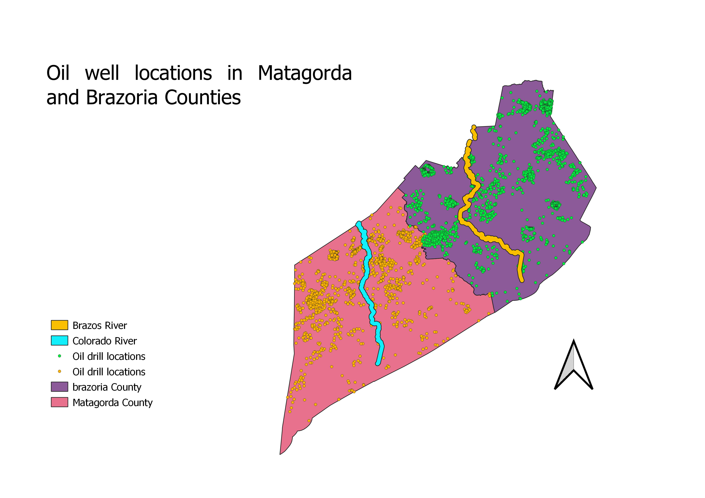

Homework 10: Oil well locations of two counties in texas
Caleb Willis
This data was modified using clip, buffer, and dissolve functions. The well data was clipped becasue some well locations were located outside of the counties. The rivers were also clipped because the shapefile included the major rivers across texas, so the rivers were clipped to fit in the counties of interest. The rivers were then bufferred to make them more visible and dissolved to give them a unified and more smoothe appearance.

Data used for this project